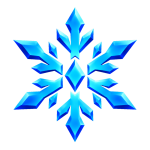

主页 / 界面加成面板
左下角加成面板
位于血条 / 体力条旁。每个芯片 = 1 个图标 + 1 个数值；横向排列、自动换行，所以看起来像「上下两排、多列」——同列上下不是同一个属性，只是排版碰巧对齐。
1.31x

+1250
1.04x
1.85x
+0.35
1.2x
读数规则
- 属性名含 Factor 或 Regen：内部存「加成量」，界面显示
(1 + 加成)x（例：0.31 → 1.31x）。
- 其它数值：正数显示
+N，负数原样。
- 只有非 0 才出现；鼠标悬停可看英文属性名。
- 设置 界面 → Health Stats 可开关整块面板。
相关：等级与精通 · 技能树 · 称号 · 公会
全部加成类型
按游戏 StatKeys 顺序，共 38 项。图标优先取 BunchaIcons.StatsAndDebuffs，技能树专属属性取 SkillTreeConfig。
| 图标 | 属性 | 显示 | 作用 |
|---|
| 最大生命 Max Health | +N | 生命上限平坦值 |
| 生命回复速度 Health Regen Speed | Nx | 自然回血倍率 |
| 最大体力 Max Stamina | +N | 体力上限 |
| 体力回复速度 Stamina Regen Speed | Nx | 体力回复倍率 |
| 移动速度倍率 Movement Speed Factor | Nx | 移速 |
| 额外伤害 Additional Damage | +N | 平坦伤害（武器精炼常带来上千） |
| 额外伤害倍率 Additional Damage Factor | Nx | 伤害乘区 |
 | 伤害减免 Damage Reduction | +N | 平坦减伤 |
| 伤害减免倍率 Damage Reduction Factor | Nx | 减伤乘区 |
| 格挡值 Block Points | +N | 格挡条容量 |
| 格挡回复 Block Regen | Nx | 格挡回复速度 |
| 光照 Illumination | +N | 鬼侧进度等提供；取最高不叠加 |
| 体力消耗速率 Stamina Drain Rate | +N | 特殊消耗速率 |
| 燃烧伤害倍率 Burn Damage Factor | Nx | 火伤 |
| 毒素伤害倍率 Poison Damage Factor | Nx | 毒伤（虫之呼吸等） |
| 攻击速度倍率 Attack Speed Factor | Nx | 攻速 |
| 冷却缩减倍率 Cooldown Reduction Factor | Nx | 技能 CD |
| 体力消耗倍率 Stamina Cost Factor | Nx | 技能耗体 |
| 最大生命倍率 Max Health Factor | Nx | 生命乘区 |
| 风伤害倍率 Wind Damage Factor | Nx | 风之呼吸 / 风元素 |
| 雷伤害倍率 Thunder Damage Factor | Nx | 雷伤 |
| 蛇伤害倍率 Serpent Damage Factor | Nx | 蛇之呼吸向 |
| 水伤害倍率 Water Damage Factor | Nx | 水之呼吸向 |
| 刀伤害倍率 Sword Damage Factor | Nx | 刀系伤害 |
| 呼吸伤害倍率 Breathing Damage Factor | Nx | 呼吸技能 |
| 跑步速度倍率 Run Speed Factor | Nx | 跑步 |
| 冲刺速度倍率 Dash Speed Factor | Nx | 闪避冲刺 |
| 跳跃倍率 Jump Power Factor | Nx | 跳跃高度 |
| 邪恶艺术伤害倍率 Evil Art Damage Factor | Nx | 血鬼技 |
| 水系体力消耗倍率 Water Stamina Cost Factor | Nx | 水系技能耗体修正 |
| 掉落幸运倍率 Drop Luck Factor | Nx | 掉落 |
| 经验倍率 Exp Factor | Nx | 经验获取 |
| 任务经验倍率 Quest Exp Factor | Nx | 任务经验 |
| 气息持续倍率 Breath Duration Factor | Nx | 水下 / 气息相关 |
| 钓鱼幸运倍率 Fishing Luck Factor | Nx | 钓鱼 |
| 咬钩速度倍率 Bite Speed Factor | Nx | 钓鱼咬钩 |
| 阳光免疫 Sun Immunity | 图标 | 布尔被动；有则显示图标 |
 | 寒冷免疫 Cold Immunity | 图标 | 布尔被动；有则显示图标 |
如何提升这些加成
| 来源 | 说明 |
|---|
| 手持武器 | 武器基础 ActiveToolStats + 精炼 / 升阶系列倍率 → 最常见大额 额外伤害 |
| 饰品 | 已装备饰品的 Stats |
| 工具栏物品 | 快捷栏装备的 ToolbarStats |
| 技能树 | 角色属性链（生命 / 体力 / 格挡 / 额外伤害等），见 技能树 |
| 血脉公会 | 当前公会的 stats，见 公会 |
| 呼吸 / 邪恶艺术 | 力量模块自带 Stats（如收割者冲刺速度） |
| 称号 | 加成槽 Buffs + 已解锁 Passives，见 标题 |
| 阵营进度 | 鬼杀队 / 鬼等级属性，见 派系 |
| 临时 Buff | 技能、区域、状态效果写入运行时 Values |
数值由多来源相加（Illumination 取最高）。面板只显示合计结果。
限时倍率（商店加成）
购买后同样出现在此面板，显示剩余时间。
| 图标 | 名称 | 效果 |
|---|
| 2x EXP | 经验 ×2 · 30 分钟 |
| 2x Wen | 文 ×2 · 15 分钟 |
| 2x Mastery | 精通 ×2 · 30 分钟 |
| 2x Luck | 幸运 ×2 · 15 分钟 |
| 4x Luck | 幸运 ×4 · 30 分钟 · VIP |
| 2x Souls | 灵魂 ×2 · 30 分钟 |
价目见 商店。